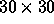
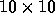
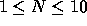
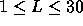
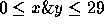

| Centipede Collisions |
A small boy named Tommy has some toy centipedes that are a series of 1 centimeter segments. Tommy assembles his centipedes to any length he likes and places them on a  centimeter board that allows the centipedes to travel in 1 centimeter wide tracks that criss-cross the board.
The centipedes travel only parallel to either the x or y axis on the board. Centipede segments of the same centipede advance at the same time and centipedes advance in cyclic numerical order (all of centipede 0 first, then 1, etc.). When more than one segment of two or more centipedes occupy the same x,y coordinate, there is a centipede collision.
Anytime a collision occurs, all segments occupying the collistion site stop and continue to occupy the collision site. All remaining segments on a centipede detach from the segment involved in the collision and continue their march until another collision occurs or an existing collision site is encountered or until the segments fall off the edge of the board. Anytime a segment enters a collision site, it becomes part of the collision.
Since Tommy left home without his centipede set, his mother has hired you to write a simulation program for his entertainment. Your program will simulate his board with a text printout of his grids. For example, Tommy may simulate 5 centipedes on his board that start out as shown on the grid on the left and finish as shown on the grid on the right (note the example grid is only  whereas Tommy's is .)
9 . . . . . . . . . . . . . . . . . . . .
8 . . . . . . . . . . . . . . . . . . . .
7 1 1 1 1 1 . . . . . . . . . . X . . . X
6 . 0 . . . . . . . . . . . . . . . . . .
5 . 0 . . . . . . . 3 . . . . . . . . . .
4 . 0 . . . 2 . . . 3 . . . . . . . . . .
3 . 0 . . . 2 . . . 3 . . . . . . . . . .
2 . . . . . 2 . . . 3 . . . . . . . . . .
1 . . . . . 2 . . . 3 . . . . . . . . . .
0 . . . . . 2 4 4 4 3 . X . . . . . . . .
Y Y
/X /X
Where 0 represents a centipede segment traveling from top to bottom,1 represents a centipede segment traveling from left to right,
2 represents a centipede segment traveling from bottom to top,
3 represents a centipede segment traveling from bottom to top,
4 represents a centipede segment traveling from right to left, and
X represents a collision site involving 2 or more segments.
Your program will simulate up to 10 centipedes that travel on a board. Tommy has 100 segments that he may use in his simulation. Of course, no centipede can be longer than 30 segments.
Input to your program will consist of a series of simulation sets. The first line of each input set will be a single integer (  ) representing the number of centipedes in the simulation. (Centipedes are numbered 0 through N-1 in the same order as the input.)
The next N lines will each represent one centipede and will contain a single direction character followed by 3 integers. The direction character can be `U', `D', `L', or `R' for ``Up", ``Down", ``Left", or ``Right" respectively and indicate the direction of travel. The next integer (  ) indicates the length of the centipede in segments. The second and third integers indicate the x,y coordinates of the lead segment (  ). The next L-1 segments of the centipede occupy the L-1 board positions extending in the opposite direction from the direction of travel starting adjacent to the lead segment.
You can be assured that no centipede segment will originate off the board nor will the original configuration involve any collisions.
For each input simulation set, you should print (exactly) the following lines as the first two lines of output (starting in column 4).
0 0 0 0 0 0 0 0 0 0 1 1 1 1 1 1 1 1 1 1 2 2 2 2 2 2 2 2 2 2 0 1 2 3 4 5 6 7 8 9 0 1 2 3 4 5 6 7 8 9 0 1 2 3 4 5 6 7 8 9
The next 30 lines represent the state of the board after the simulation has completed (all centipede segments have entered a collision site or fallen off the edge of the board). Columns 1 and 2 should contain the row number (rows are numbered 29 down to 00) with leading zeroes. Even numbered columns between 4 and 62 (inclusive) represent the contents of the board cells. Board cells can contain either an X or a period. A period represents an empty cell and X represents a cell that contains 2 or more centipede segments involved in a collision. The last line of each output set is a blank line.
Follow the Sample Output for the exact format of the expected output.
10 R 9 11 23 U 8 11 17 U 5 15 15 U 5 15 8 D 9 23 13 U 6 23 6 R 9 8 9 L 13 17 0 U 12 13 11 L 5 20 9
0 0 0 0 0 0 0 0 0 0 1 1 1 1 1 1 1 1 1 1 2 2 2 2 2 2 2 2 2 2 0 1 2 3 4 5 6 7 8 9 0 1 2 3 4 5 6 7 8 9 0 1 2 3 4 5 6 7 8 9 29 . . . . . . . . . . . . . . . . . . . . . . . . . . . . . . 28 . . . . . . . . . . . . . . . . . . . . . . . . . . . . . . 27 . . . . . . . . . . . . . . . . . . . . . . . . . . . . . . 26 . . . . . . . . . . . . . . . . . . . . . . . . . . . . . . 25 . . . . . . . . . . . . . . . . . . . . . . . . . . . . . . 24 . . . . . . . . . . . . . . . . . . . . . . . . . . . . . . 23 . . . . . . . . . . . X . . . X . . . . . . . . . . . . . . 22 . . . . . . . . . . . . . . . . . . . . . . . . . . . . . . 21 . . . . . . . . . . . . . . . . . . . . . . . . . . . . . . 20 . . . . . . . . . . . . . . . . . . . . . . . . . . . . . . 19 . . . . . . . . . . . . . . . . . . . . . . . . . . . . . . 18 . . . . . . . . . . . . . . . . . . . . . . . . . . . . . . 17 . . . . . . . . . . . . . . . . . . . . . . . . . . . . . . 16 . . . . . . . . . . . . . . . . . . . . . . . . . . . . . . 15 . . . . . . . . . . . . . . . . . . . . . . . . . . . . . . 14 . . . . . . . . . . . . . . . . . . . . . . . . . . . . . . 13 . . . . . . . . . . . . . . . . . . . . . . . . . . . . . . 12 . . . . . . . . . . . . . . . . . . . . . . . . . . . . . . 11 . . . . . . . . . . . . . . . . . . . . . . . . . . . . . . 10 . . . . . . . . . . . . . . . . . . . . . . . . . . . . . . 09 . . . . . . . . . . . . . X . X . . . . . . . X . . . . . . 08 . . . . . . . . . . . . . . . . . . . . . . . . . . . . . . 07 . . . . . . . . . . . . . . . . . . . . . . . . . . . . . . 06 . . . . . . . . . . . . . . . . . . . . . . . . . . . . . . 05 . . . . . . . . . . . . . . . . . . . . . . . . . . . . . . 04 . . . . . . . . . . . . . . . . . . . . . . . . . . . . . . 03 . . . . . . . . . . . . . . . . . . . . . . . . . . . . . . 02 . . . . . . . . . . . . . . . . . . . . . . . . . . . . . . 01 . . . . . . . . . . . . . . . . . . . . . . . . . . . . . . 00 . . . . . . . . . . . . . . . . . . . . . . . . . . . . . .